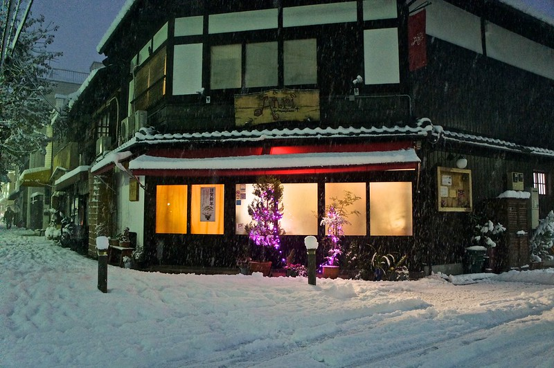

My First Snow in Kyoto
[Click the image to view on Google Maps]

One of the local restaurants, Anri, still open late at night. This place always had its doors open, so them being closed shows how cold it was.
Next Page
Previous Page
RETURN